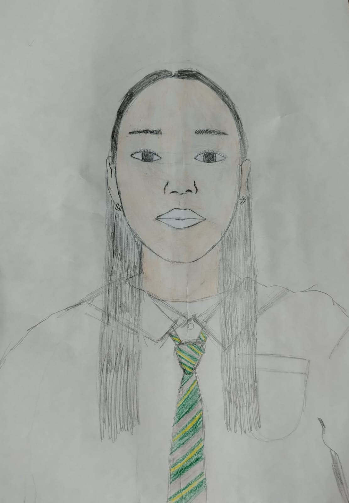

Творческий проект
взгляд на себя со стороны
Автор
Уап Аружан
Класс
7 «Е»
Дата
6 октября 2026
Листайте стрелками или касанием →
Знакомство
Автопортрет — это портрет художника, созданный им самим. Чтобы изобразить себя, художник смотрит в зеркало или на фотографию и показывает не только внешность, но и характер.
1500
«Автопортрет в одежде, отороченной мехом»
Изобразил себя строго анфас — смело для своего времени.
1889
«Автопортрет с перевязанным ухом»
Писал себя очень часто — у него больше 35 автопортретов.
1940
«Автопортрет с терновым ожерельем и колибри»
Через автопортреты рассказывала о своих чувствах и жизни.
Моя работа
Автор
Уап Аружан
Техника
Рисунок карандашом
Материалы
Простой и цветные карандаши, бумага
Год
2026
Процесс
Лёгкими линиями наметила овал лица, шею и плечи
Провела центральную линию и разметила глаза, нос и губы
Прорисовала глаза, брови, нос, губы и уши
Штрихами нарисовала волосы, рубашку и галстук
Цветными карандашами раскрасила кожу и галстук
Идея
«Я хотела показать себя такой, какая я есть каждый день: спокойной, собранной и открытой»
Прямой взгляд — честность и открытость
Школьная форма — моя жизнь сейчас: учёба и школа
Яркий галстук — единственный цветной акцент
Трудности
01
Правильно расположить глаза, нос и губы, чтобы лицо было похоже на моё.
02
Нарисовать оба глаза одинаковыми и добиться прямого, живого взгляда.
03
Штрихами передать длинные прямые волосы так, чтобы они не выглядели плоскими.
Результат
Внимательно смотреть на себя и замечать мелкие детали.
Размечать пропорции: центр лица, линию глаз, нос и губы.
Передавать карандашом волосы, объём и тени.
Выделять главное цветом, а остальное оставлять сдержанным.
Итог
Работа над автопортретом помогла мне лучше узнать себя и понять, что в рисунке главное — внимательность и терпение.
Уап Аружан, 7 «Е»

Автопортрет · Уап Аружан